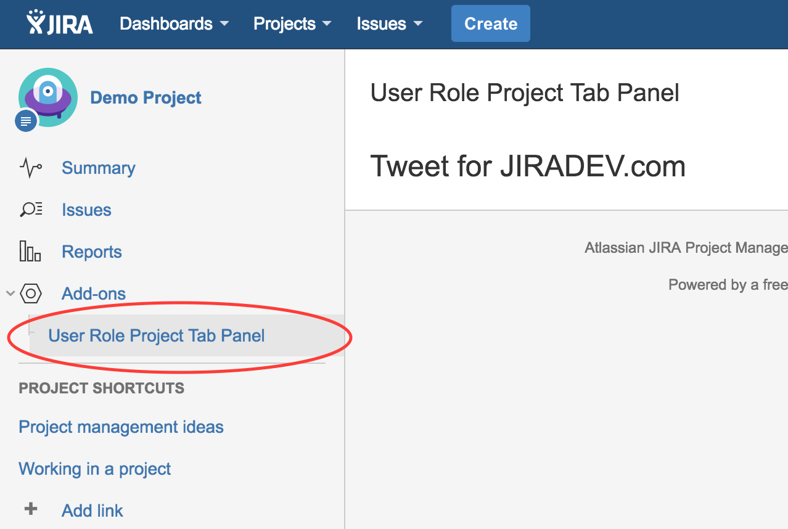
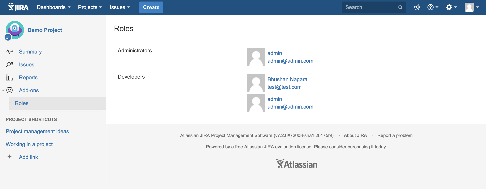

Requirement: Display a list of all the users on the project dashboard.
Open the project in your IDE and take a look at the atlassian-plugin.xml file. Notice that the project-tabpanel has a resource of type velocity defined. This file is located in your project's resource/templates/tabpanels folder. Edit this file and enter the text <h1>Tweet for JIRADEV.com</h1>
Also notice you src directory. The SDK has created a new java class named UserRoleProjectTabPanel.java in the package com.jiradev.jira.plugins.panels.project. This is where we will be writing code to implement our functionality.
Run JIRA using atlas-run command and create a demo project. Navigate to the project dashboard. And you should now see
the output displayed in the below screenshot.

package com.jiradev.jira.plugins.panels.project;
import com.atlassian.crowd.embedded.api.User;
import com.atlassian.jira.component.ComponentAccessor;
import com.atlassian.jira.project.Project;
import com.atlassian.jira.security.roles.ProjectRole;
import com.atlassian.jira.security.roles.ProjectRoleActors;
import com.atlassian.jira.security.roles.ProjectRoleManager;
import org.slf4j.Logger;
import org.slf4j.LoggerFactory;
import com.atlassian.jira.plugin.projectpanel.impl.AbstractProjectTabPanel;
import com.atlassian.jira.plugin.projectpanel.ProjectTabPanel;
import com.atlassian.jira.plugin.projectpanel.ProjectTabPanelModuleDescriptor;
import com.atlassian.jira.project.browse.BrowseContext;
import java.util.Collection;
import java.util.Map;
import java.util.TreeMap;
public class UserRoleProjectTabPanel extends AbstractProjectTabPanel implements ProjectTabPanel
{
private static final Logger log = LoggerFactory.getLogger(UserRoleProjectTabPanel.class);
private ProjectRoleManager projectRoleManager = ComponentAccessor.getComponent(ProjectRoleManager.class);
private TreeMap people = new TreeMap();
public Map createVelocityParams (BrowseContext ctx)
{
//Get the params object. This will hold all the values that can be accessed in the user-role-project-tab.properties file
Map params = super.createVelocityParams(ctx);
//Get the project object
Project project = ctx.getProject();
//Get all the project roles
Collection projectRoles = projectRoleManager.getProjectRoles();
//Iterate through each role and get the users associated with the role
for (ProjectRole projectRole : projectRoles){
ProjectRoleActors roleActors = projectRoleManager.getProjectRoleActors(projectRole, project);
people.put(projectRole.getName(),roleActors.getUsers());
}
params.put("people",people);
params.put("avatarService",ComponentAccessor.getAvatarService());
return params;
}
public boolean showPanel(BrowseContext context)
{
return true;
}
}
<div class="module">
<div class="mod-content">
<table class="aui">
#foreach( $entry in $people.entrySet() )
#if($entry.getValue().size() > 0)
<tr>
<td>$entry.getKey()
<td>
<table>
#foreach($user in $entry.getValue())
<tr>
<td>
<img height="48px" src="$avatarService.getAvatarAbsoluteURL($user,$user.getName(), $Avatar.Size.SMALL)"/>
</td>
<td style="padding: 3px;">
<a href="${requestContext.baseUrl}/secure/ViewProfile.jspa?name=$user.getName()">$user.getDisplayName()</a>
<br />
<a href="mailto:$user.getEmailAddress()">$user.getEmailAddress()
</td>
</tr>
#end
</table>
</td>
</tr>
#end
#end
</table>
</div>
</div>
Debugging your project
Create a new user and associate him to a role in a project. You should see the list of users in your project tab panel now.

Show your support by tweeting about this tutorial. Is Jiradev something you would reommend? Let me know.
Do you have a Jira plugin tutorial that can be used on this site? Please do share it with me and I can add it along with the ones available.
Your feedback can help improve the content on this site. If you have anything that you would like me to change/implement on the site.